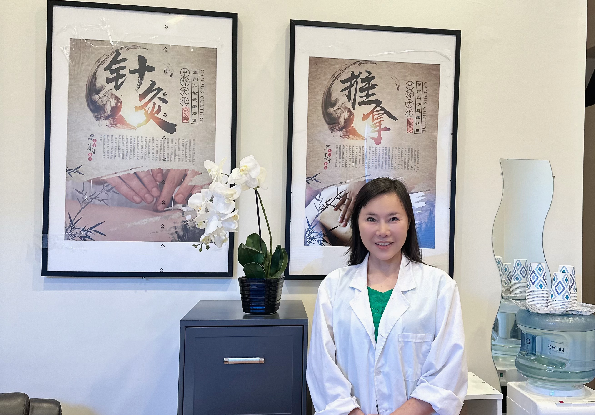

About Us
Ning Ning Pain Solution has been helping patients in San Francisco for more than 15 years. Our licensed practitioners use centuries-old diagnostic techniques to develop a differential diagnosis, create and implement an individualized treatment plans and use proven healing techniques to address your health problems. We bring deep expertise and vast clinical experience to each personalized session. Ning Ning Pain Solution is operated by Grand TCM Healing Acupuncture Inc., a California-registered healthcare provider.
Licensed Acupuncturist
Yangchun Ning is a licensed acupuncturist in California and a nationally certified acupuncturist in the US. She has 45 years of combined professional and academic experience in traditional acupuncture. she excels at treating a variety of conditions, including peri/menopause, digestive issues, insomnia, and menstrual issues.

Licensed Acupuncturist
Licensed Massage Therapist
Juxiang Ning is a California-licensed acupuncturist, and massage therapist. she has 10+ years of message therapy and 2 years of advanced acupuncture experience.
